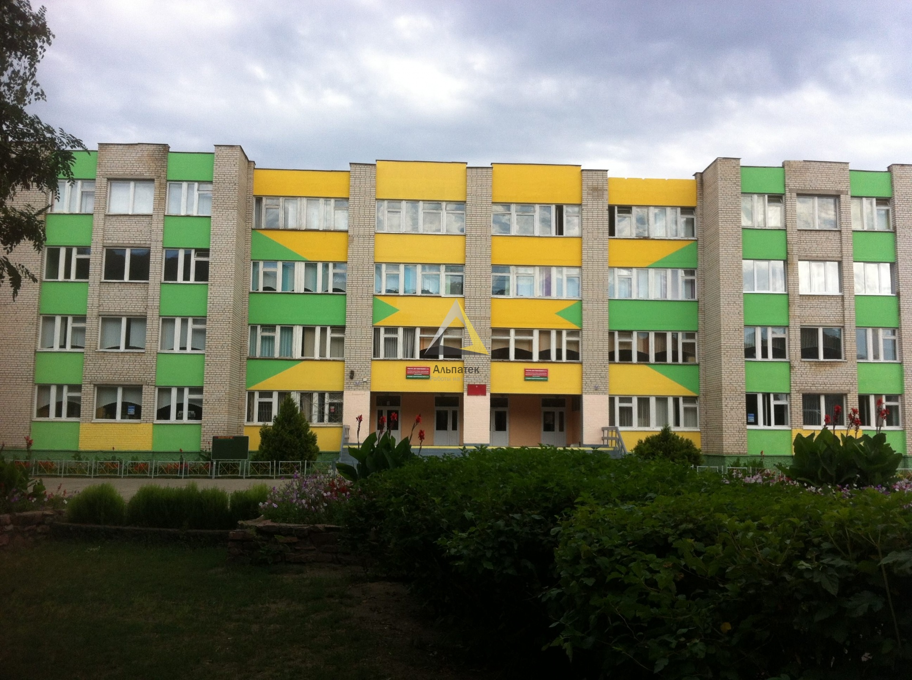

Государственное учреждение образования «Средняя школа № 7 г. Речицы»
Основные сведения
Тип учреждения: Учреждение общего среднего образования
Населенный пункт: Речица
Контактная информация
Адрес:
247500, Гомельская область, Речицкий район
г. Речица, ул. Строителей, д. 7
Телефон: +375 2340 39792
Факс: +375 2340 39792
E-mail: shkola7@rechitsa-edu.gov.by
Режим работы
Понедельник – пятница: 8:00 – 20:00
Предпраздничные дни: 8:00 – 19:00
Руководство
Должность
Фамилия, имя, отчество
Директор школы
Скворцова Елена Викторовна
Заместитель директора по учебной работе
Петкун Вячеслав Геронимович
Заместитель директора по учебной работе
Железинская Светлана Леонидовна
Заместитель директора по учебной работе
Ерашко Лада Лидия Ивановна
Заместитель директора по воспитательной работе
Каленистова Татьяна Владимировна
Предварительная запись на личный прием осуществляется по телефону 8 (02340) 3 97 67 (приемная).
Об учреждении

Основными задачами государственного учреждения образования «Средняя школа № 7 г. Речицы» являются:
Совершенствовать структуру и методическое наполнение учебных и факультативных занятий с целью улучшения качества знаний учащихся.
Осуществлять раннюю диагностику, проводить профилактику зависимостей в сотрудничестве с учреждениями дошкольного образования и законными представителями.
Обеспечить сотрудничество с учреждениями дополнительного образования детей и молодежи в организации внеурочной занятости обучающихся.
Организовать работу по профилактике зависимостей и формированию ЗОЖ с привлечением межведомственных структур и учреждений здравоохранения.